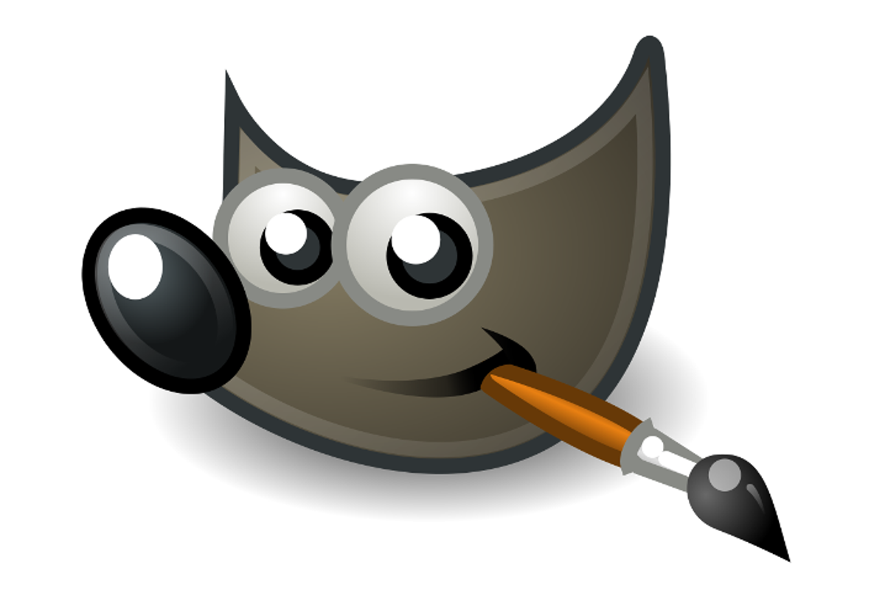
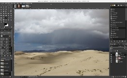
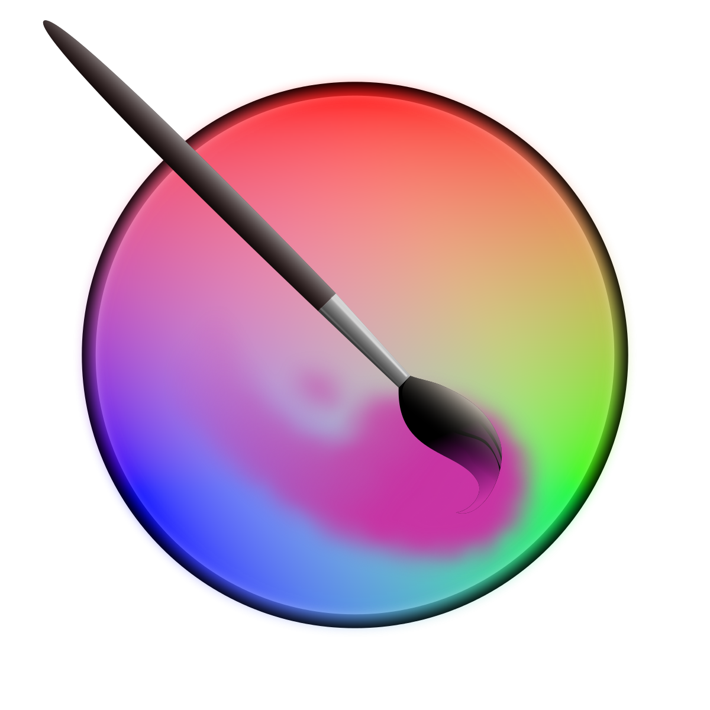
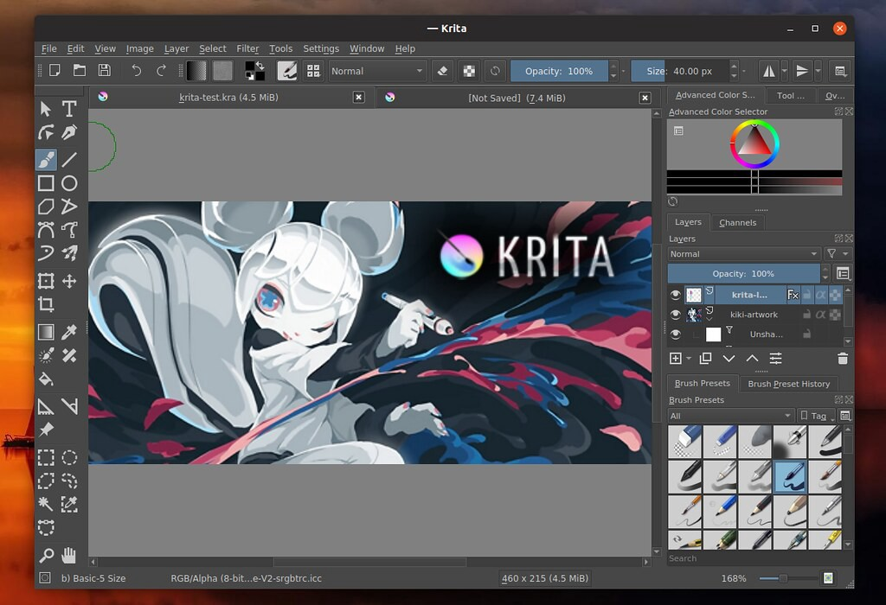
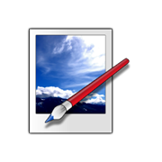

| # | Herramienta | Interfaz | Descripción | Ventajas |
|---|---|---|---|---|
| 1 |

GIMP |
 | Tiene algunas similitudes con el software de dibujo de manga Photoshop, lo que significa que es ideal para pintar y dibujar. Se trata de un software muy versátil ya que gracias a las opciones de personalización y a los plugins podremos desde manipular fotografías para hacer correcciones avanzadas hasta realizar dibujos artísticos, vectoriales y mucho más. Con GIMP las posibilidades son infinitas. |
|
| 2 | Krita

Krita |
 | Es un editor de imágenes para Windows, desarrollado en el marco de trabajo .NET. La aplicación comenzó como un proyecto desarrollado en la Universidad estatal de Washington (WSU) para Microsoft Windows supervisado por Microsoft. Paint.NET está programado en el lenguaje de programación C#, con pequeñas cantidades del lenguaje de programación C++ para instalación y funcionalidades relacionadas con la integración con el shell. Ha sido comparado con otros paquetes de software de edición de fotos digitales, tales como Adobe ®Photoshop ® , Corel ® Paint Shop Pro ® , Microsoft Photo Editor, yGIMP . |
|
| 3 | Paint.Net

Krita |
 |
Es un editor de imágenes para Windows, desarrollado en el marco de trabajo . NET. La aplicación comenzó como un proyecto desarrollado en la Universidad Estatal de Washington (WSU) para Microsoft Windows supervisado por Microsoft. ... Lanzado bajo una licencia MIT, Paint.NET era de código abierto. |
|
| 4 | Blender | |
Es una herramienta libre con un ambiente integrado para diseño, modelado, animación y postproducción de contenido 3D. Adicionalmente posee un conjunto de opciones para el desarrollo de videojuegos que lo convierte en una herramienta más versátil y potente frente a otras alternativas primitivas como 3D Studio o Maya. |
|

| Herramienta | Interfaz | Descripción | Ventajas | URl |
|---|---|---|---|---|
| ------- | ------------ |
|
https://www.gimp.org/downloads/ |